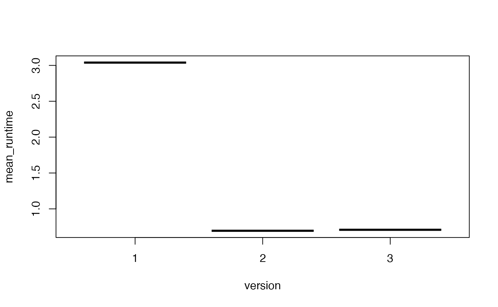

network <- kwb.graph::exampleNetwork(n_links = 25L, index = 13L)
# Define a function to plot the network (requires the "igraph" package)
plot_net <- function(network, ..., marked = NULL, seed = 1L) {
if (! is.null(seed)) {
set.seed(seed)
}
if (is.null(marked)) {
edge.color <- "gray"
} else {
edge.color <- rep("lightgray", nrow(network))
edge.color[marked] <- "red"
}
igraph::plot.igraph(
x = igraph::graph_from_data_frame(network),
layout = igraph::layout.fruchterman.reingold,
vertex.size = 5,
vertex.label.cex = 0.8,
vertex.label.dist = 1.5,
edge.arrow.size = 0.5,
edge.color = edge.color,
...
)
}
# Plot the two networks
plot_net(network)
# For each link, find all links upstream
us_links <- kwb.graph::getConnectedLinks(network)
# Mark the upstream links for three different start links
link_sets <- us_links[lengths(us_links) > 3L]
plot_net(network, marked = link_sets[[1]])
plot_net(network, marked = link_sets[[3]])
plot_net(network, marked = link_sets[[10]])
# Get the full example network that is stored in the package
network <- kwb.graph::exampleNetwork(n_links = -1L)
# For the comparison of run times, initialise vectors holding run times
runtime.R <- vector()
runtime.C1 <- vector()
runtime.C2 <- vector()
# Function to run code in "exp" and return elapsed time
elapsed <- function(exp) system.time(exp)["elapsed"]
# Shortcut to the main function. Arguments "resultSize" and "queueSize" are
# required by the C-versions of getConnectedLinks(), TODO: find proper values
# within getConnectedLinks()!
run <- function(version) kwb.graph::getConnectedLinks(
network,
version = version,
resultSize = 2054851,
queueSize = 100*1024
)
# Number of repetitions for run time comparison
n <- 3L
# Compare run times of three different implementations of the "collect links
# upstream" algorithm within getConnectedLinks()
for (i in seq_len(n)) {
cat("run", i, "/", n, "\n")
runtime.R[i] <- elapsed(x1 <- run(version = 1L))
runtime.C1[i] <- elapsed(x2 <- run(version = 2L))
runtime.C2[i] <- elapsed(x3 <- run(version = 3L))
}
#> run 1 / 3
#> run 2 / 3
#> run 3 / 3
(runtimeData <- data.frame(
version = 1:3,
implementation = c("R-functions", "C-functions(1)", "C-functions(2)"),
mean_runtime = sapply(list(runtime.R, runtime.C1, runtime.C2), mean)
))
#> version implementation mean_runtime
#> 1 1 R-functions 2.7400000
#> 2 2 C-functions(1) 0.7193333
#> 3 3 C-functions(2) 0.7140000
boxplot(mean_runtime ~ version, data = runtimeData)